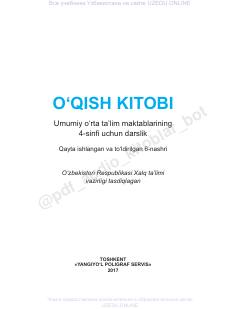

OK4-sinf o‘quvchilari uchun mo‘ljallangan o‘qish fanidan darslik.
Ushbu darslik umumiy o‘rta ta’lim maktablarining 4-sinf o‘quvchilari uchun mo‘ljallangan bo‘lib, o‘qish savodxonligini oshirishga xizmat qiladi. Kitobdan turli janrdagi badiiy asarlar, she’rlar, hikoyalar va Vatanimiz tarixi hamda mustaqillik haqidagi matnlar o‘rin olgan.